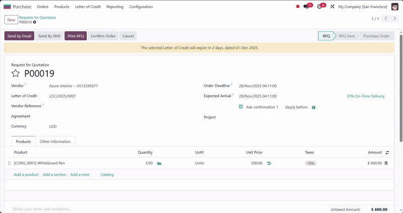

Generate confirmation dialogs on the fly with server-side logic.

Odoo already lets you define static confirmation texts via confirm="message" in <button> tag.
This module upgrades that behavior by letting you pass a Python method name directly via
confirm_method="method_name". When the user clicks the button, the method runs,
returning a message that reflects the current record state. The dialog always shows relevant
guidance without maintaining dozens of XML variants.
confirm attribute.confirm_method="your_python_method" in <button> tag to specify the method to call.your_python_method on the model. It must return
a string representing the confirmation message. Returning an empty string skips the dialog.